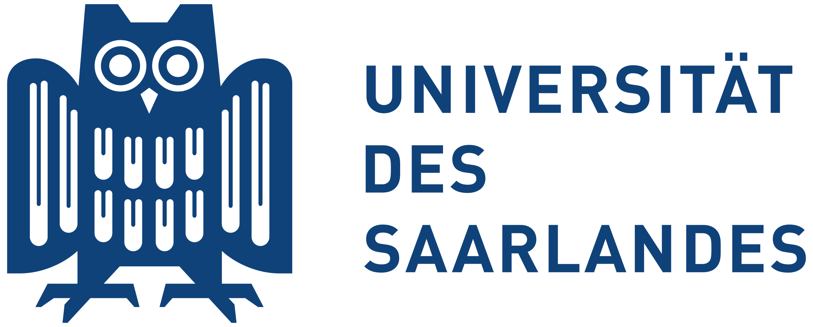
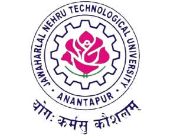

-

Macquarie University
Masters Thesis
2025 – Present -

Saarland University
Masters Student
2023 – Present -
I2SC
Research Assistant
2023 - Present -
Innopolis University
Research Intern
2022 -

JNTUA
B.Tech.
2018 - 2022